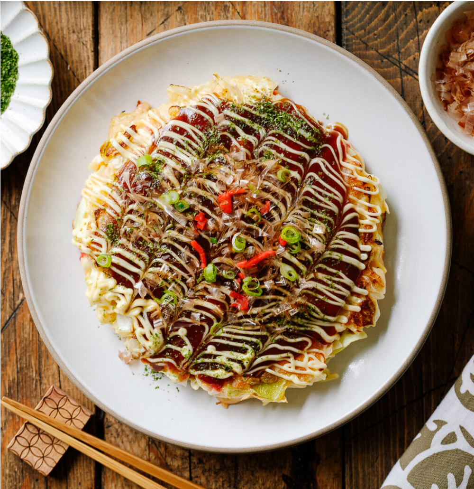

Okonomiyaki
Okonomiyaki (お好み焼き) is a savory Japanese cabbage pancake. In the U.S., people sometimes call it a “Japanese pizza” or “Japanese frittata” because of its customizable toppings.
Ingredients
For the base batter:
- Flour
- Salt
- Sugar
- Baking Powder
- Grated mountain yam (nagaimo/yamaimo)
- Dashi (Japanese soup stock)
For the Okonomiyaki
- Eggs
- Tenkasu (tempura scraps)
- Pickled red ginger (kizami shoga)
- Green cabbage
- Sliced pork belly
How to make:
Step 1 – Make the base batter. Start by mixing the flour, grated yam, and dashi into a smooth batter. Many say resting the batter helps it develop better flavor and makes the pancakes fluffier. Even letting it sit for a short time while you prepare the other ingredients will make a difference.
Step 2 – Prep the ingredients. Finely chop the cabbage, slice the green onions, and prepare any proteins or add-ins you plan to use. Drain the cabbage well so the extra water doesn’t thin the batter. A salad spinner is especially handy for this step.
Step 3 – Mix the okonomiyaki batter. Add the eggs, tempura scraps (tenkasu), and chopped red pickled ginger into the base batter. Gently fold in the finely chopped cabbage until everything is evenly coated. The batter should feel thick and full of cabbage.
Step 4 – Cook the okonomiyaki. Heat a frying pan or electric griddle over medium heat. Lightly oil the surface and spoon on the batter to form a round pancake about ¾ inch thick. Lay pork belly slices (or your chosen topping) on top, and cook until the bottom is golden before flipping. Cook until both sides are nicely browned and the center is cooked through. Read my detailed tips in the recipe card. I like to cook at least two at once (using two frying pans or a large griddle on the stove) so they finish together.
Step 5 – Add condiments and toppings. Transfer the hot okonomiyaki to a plate and brush the surface with okonomiyaki sauce. Drizzle with Japanese mayonnaise, then sprinkle aonori (dried seaweed) and katsuobushi (bonito flakes) on top. The bonito flakes will “dance” with the heat—one of the joys of serving this dish. Enjoy!